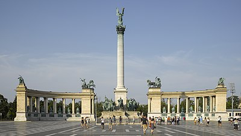

Welcome to Wikipedia
the free encyclopedia that anyone can edit.
5,589,971 articles in English.
- Arts
- Biography
- Geography
From today's featured article
Ferugliotherium was a mammal of the Late Cretaceous, around 70 million years ago. The genus was first described in 1986 but misidentified as a member of Multituberculata, an extinct group of rodent-like mammals, on the basis of a single tooth, a low-crowned molar. It is thought to have had a small body mass, about 70 g (2.5 oz), and may have eaten insects and plant material. Its remains have been found in two geological formations of present-day southern Argentina, as part of a mammal fauna that included the sudamericid Gondwanatherium and a variety of dryolestoids. The upper and lower incisors were long and rodent-like, with enamel on only one side of the crown. A fragment of the lower jaw shows that the tooth socket of the lower incisor was very long. Although Ferugliotherium had much lower-crowned teeth than the sudamericids, they shared the same backward jaw movement during chewing and essentially similar patterns in their incisors and on the chewing surface of their molar-like teeth, with small enamel prisms. (Full article...)
Recently featured: Thomas Riley Marshall Winter War Family Trade
Archive By email More featured articles
Did you know...
Goat Canyon Trestle
- ... that the Goat Canyon Trestle (pictured) is the world's largest curved wooden trestle?
- ... that after arriving penniless in Liverpool in 1920, Indian physician Harbans Lall Gulati walked to London to obtain work?
- ... that the waterfalls on Catlin Brook are the "holy grail" of Pennsylvania waterfalls?
- ... that Benty Grange is designated a Site of Special Scientific Interest, but not because of the boar-crested helmet discovered there?
- ... that Elizabeth Kane wrote a book sympathetic to Mormon polygamists while simultaneously objecting to how polygamy subjugated women?
- ... that The Daily Telegraph said The Hatton Garden Job "begins to feel like a bizarre, Brechtian joke at the audience's expense"?
- ... that due to its proximity to a charter school, alcoholic beverages cannot be served at Zions Bank Stadium?
- ... that Akane Fujita decided to become a voice actress partly because she "wanted to do something that was fun"?
Archive Start a new article Nominate an article
In the news

Stephen Hawking
- In response to the attempted murder of Sergei Skripal with a nerve agent, the United Kingdom expels 23 Russian diplomats.
- British physicist and cosmologist Stephen Hawking (pictured) dies at the age of 76.
- At least 49 people are killed after US-Bangla Airlines Flight 211 crashes en route from Dhaka, Bangladesh, to Kathmandu, Nepal.
- The Winter Paralympics open in Pyeongchang, South Korea.
- The wreck of USS Lexington is discovered in the Coral Sea.
Ongoing: Rif Dimashq offensive · Turkish military operation in Afrin
Recent deaths: Jim Bowen Ken Dodd Karl Lehmann Millie Dunn Veasey
Nominate an article
On this day...
The Death of Julius Caesar
by Vincenzo Camuccini
March 15: Ides of March
- 44 BC – Dictator Julius Caesar of the Roman Republic was stabbed to death (pictured) by Marcus Junius Brutus and several other Roman senators.
- 1875 – Archbishop of New York John McCloskey was named the first cardinal in the United States.
- 1917 – Tsar Nicholas II of Russia was forced to abdicate in the February Revolution, ending three centuries of Romanov rule.
- 1943 – World War II: German forces recaptured Kharkov after four days of house-to-house fighting against Soviet troops, ending the month-long Third Battle of Kharkov.
- 1990 – Iraqi authorities hanged freelance Iranian reporter Farzad Bazoft for spying for Israel.
Archibald Menzies (b. 1754) · Matthew Charlton (b. 1866) · Paul Pogba (b. 1993)
More anniversaries: March 14 March 15 March 16
Archive By email List of historical anniversaries
Today's featured picture
Hősök tere is a major square in Budapest, Hungary, known for its statue complex featuring the Seven Chieftains of the Magyars and other national leaders, as well as the Tomb of the Unknown Soldier. The square lies at the outbound end of Andrássy Avenue next to City Park. It hosts the Museum of Fine Arts and the Hall of Art. The square has played an important part in modern Hungarian history and has been a host to many political events, such as the reburial of Imre Nagy in 1989.
Photograph: Andrew Shiva